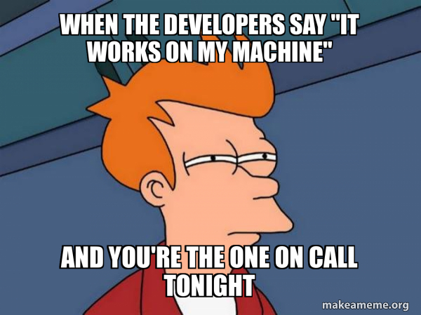
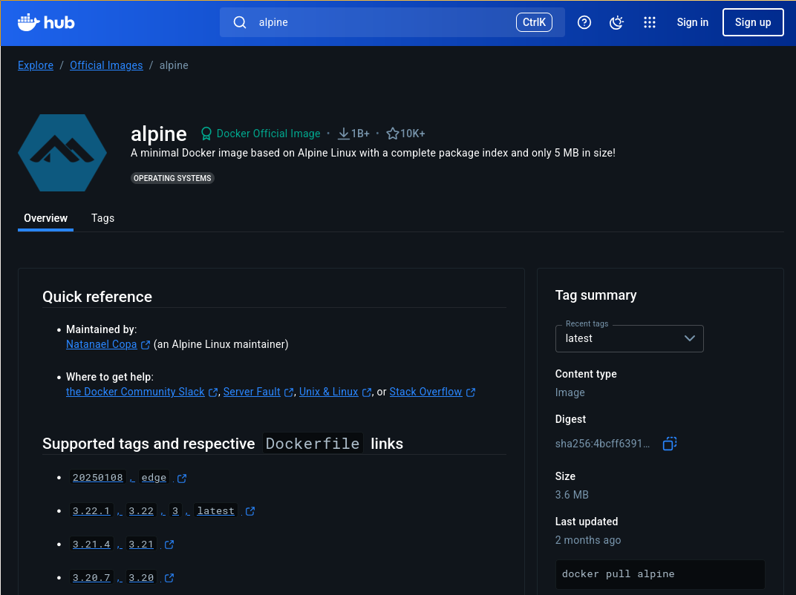

name: title layout: true class: cover --- count: false counter: false .section-mark.center[ <a href="https://oesteban.github.io/isc-302-2026-2027-slides/week1/day2/index.html"> <object type="image/svg+xml" data="images/qr-talk-url.svg" style="width: 20%"></object> <br /> https://oesteban.github.io/isc-302-2026-2027-slides/week1/day2/index.html </a> <br /> <br /> ## DevOps and Docker Oscar Esteban <<code>oscar.esteban@hevs.ch</code>> <br /> ### 302 Data infrastructures (week 1, day 2) — 18.09.2026 ] ??? --- name: newsection layout: true .perma-sidebar[ <p class="rotate"> <a rel="license" href="http://creativecommons.org/licenses/by/4.0/"><img alt="Creative Commons License" style="border-width:0; height: 20px; padding-top: 6px;" src="https://i.creativecommons.org/l/by/4.0/88x31.png" /></a> <span style="padding-left: 10px; font-weight: 600;">DevOps and Docker (18.09.2026)</span> </p> ] --- .section-mark[ # Quiz (before) ] --- class: vcenter # Objectives .cards.goals[ .card[ .marker[<i class="fa-solid fa-circle-right"></i>] Explain **how containers work** and identify suitable applications for them .gray-text[and identify when virtual machines are a better solution] ] .card[ .marker[<i class="fa-solid fa-circle-right"></i>] **Write** a `Dockerfile`, **build** an image, and **run** a container .gray-text[In µLab 1, drivers will build their own image] ] .card[ .marker[<i class="fa-solid fa-circle-right"></i>] **Use CI/CD** to make images build automatically .gray-text[and explain a simple CI/CD workflow for GitHub Actions] ] .card[ .marker[<i class="fa-solid fa-circle-right"></i>] **Split one image in two**, and let one container start the other .gray-text[(a notebook that holds no tools, and runs them through the Docker socket)] ] .card[ .marker[<i class="fa-solid fa-circle-right"></i>] **Run a workload on Kubernetes** .gray-text[(for which, you will deploy a lightweight K8s implementation)] ] ] --- # Schedule .boxed-content.program-table[ | Time | Content | |:--:|:--| | 8h35 | **Roulette**: What do you know/want to know about containers? | | 8h55 | Containers, virtual machines, images, layers | | 9h30 | **µLab 1**: first steps authoring images and containers | | 10h40 | Conclusions from µLab 1 | | 11h00 | .gray-text[Short break] | | 11h10 | **µLab 2**: redesigining the neuropipeline | | 11h45 | .gray-text[Lunch break] | | | | | 12h45 | Continuation of µLab 2 | | 14h00 | **Intro**: Kubernetes | | 14h20 | **µLab 3**: hello, Kubernetes | | 15h20 | **Quiz** & Individual time | | 16h10 | .gray-text[End] | ] --- class: roulette time: 60 include_org: true # Roulette .boxed-content[ .pull-right.large[ What do you know/want to know about containers? .no-bullet.gray-text[ * <i class="fa-solid fa-ranking-star"></i> Benefits/strengths/interest * <i class="fa-solid fa-triangle-exclamation"></i> Problems/caveats/gaps * <i class="fa-solid fa-circle-question"></i> Questions * <i class="fa-solid fa-comment"></i> Opinions/remarks/comments/discussion * <i class="fa-solid fa-code-fork"></i> VMs/containers: when? ] ] .pull-left[ > <br /> > — Your code doesn't work. > <br /> > — It works on my machine! > <br /> > — Then pack that machine and ship it to the client. .center[ <p></p> ] ] ] ??? Reasons why 'it works [only] on my machine': * One or more files are missing (meaning, the installation is not reproducible). * Software versions mismatch (e.g., Python 3.8 vs 3.10, or a dependency). * Different settings: * Environment variables different or not set (e.g., `PATH`, `PYTHONPATH`, etc.). * Configuration files * Permissions * Platform specific settings (e.g., slightly different hardware) Examples of why: * Deployment on production * A new recruit joins the team * Version control of deployiment settings (`Dockerfile`) --- class: vcenter # Virtual machines vs. containers .cards.cols-2[ .card[ .section-icon.corner[<i class="fa-solid fa-server"></i>] .kicker[requires its own kernel] ### Virtual machine A simulated computer (*guest machine*) running a full OS stack on top of a **hypervisor**. The hypervisor provides the guest OS with a virtual platform (the virtual hardware). .foot[ * Booting the virtual OS takes a minute (or more), * images are large, * strong isolation, and * hardware capacity can be scaled down.] ] .card[ .section-icon.corner[<i class="fa-solid fa-cubes"></i>] .kicker[shares the host's kernel] ### Container Uses LXC (**Linux Containers**), which enables a Linux system share it's **kernel**. The container registers isolated *processes* that use the kernel. .foot[ * Spinning up a container is a matter of seconds, * images are relatively small, and * they use the hardware directly, at full capacity.] ] ] .admonition[ .large[<i class="fa-solid fa-circle-right"></i> **Both** run apps on isolated environments] ] ??? * Containers share the host OS kernel, and isolate the application processes from the rest of the system. * Virtual machines simulate the physical hardware and install a full OS stack with its own kernel. BOTH run apps on isolated environments. **Hypervisor**: software layer that leverages hardware (directly—type 1,—or through the OS—type 2) virtualization to create and run virtual machines. * VirtualBox (type 2, cross-platform) * VMware (type 2, cross-platform) * KVM (type 2, Linux) * bhyve (type 2, FreeBSD) * Parallels (type 2, macOS) * Xen (type 1, Linux) * VMware ESXi (type 1, server) * Hyper-V (type 1, Windows) Main caveats of VMs vs containers—each VM needs a full OS: * Heavy (GBs) * Slow to boot (minutes) * More resource hungry (RAM, CPU). Eg., 2 VMs with 2GB RAM each on a host with 4GB RAM will likely lead to swapping and very poor performance. * More HPC-friendly (though, Docker is generally not found in HPC settings) Benefits of VMs vs containers—each VM is fully isolated: * More secure (stronger isolation) --- # Virtual machines vs. containers .boxed-content.center[ <img src="https://wac-cdn.atlassian.com/dam/jcr:92adde69-f728-4cfc-8bab-ba391c25ae58/SWTM-2060_Diagram_Containers_VirtualMachines_v03.png" style="width: 100%; padding-top: 20px;"/> .align-right.small[ Source: [Atlassian](https://www.atlassian.com/microservices/cloud-computing/containers-vs-vms) ] ] -- count: false .admonition[ .large[<i class="fa-solid fa-quote-left"></i> *It works on my (virtual) machine*] ] ??? * Containers share the host OS kernel, and isolate the application processes from the rest of the system. * Virtual machines simulate the physical hardware and install a full OS stack with its own kernel. The second step is the callback to the roulette quote. The VM column is the old answer to exactly the same problem, and it is the expensive one. --- class: vcenter # How can containers run on MacOSX or Windows? .cards.cols-3[ .card[ .section-icon.corner[<i class="fa-solid fa-laptop"></i>] .kicker[Containers need LXC] ### No Linux kernel Neither MacOSX or Windows have a Linux kernel, **they cannot run containers natively**. .foot[Exception: Windows' WSL] ] .card[ .section-icon.corner[<i class="fa-solid fa-layer-group"></i>] .kicker[VMs to the rescue] ### Run Linux on a VM Docker Desktop runs a virtual machine and a Linux on top. .foot[`docker info` — the OS it reports is not the one you booted.] ] .card.alert[ .section-icon.corner[<i class="fa-solid fa-triangle-exclamation"></i>] .kicker[Tricky question] ### Apple's M2 is ARM64 The VM runs Linux, but on the ARM64 architecture. If all or some software in the container image is only compiled for AMD64, the architecture must be **emulated** for the container, instruction by instruction. .foot[Emulate instruction-by-instruction **is very slow**.] ] ] .admonition.warning[ <i class="fa-solid fa-triangle-exclamation"></i> The promise that containers *run the same everywhere* meets one limitation with varying architectures. ] ??? --- # Virtual machines vs. containers .pull-left.large[ VMs win at: * Traditional, legacy, and/or monolithic workloads * Isolate risky development cycles * Provision infrastructure (networks, server, data) * Run a different OS inside another OS. ] .pull-right.large[ Containers win at: * Building cloud-native apps. * Packaging microservices. * Deploying applications into DevOps and CI/CD. * Developing and deploying in heterogeneous settings (laptops, on-prem servers, clouds, edge, HPC...) * Scaling projects (grow/shrink easily) ] ??? --- # "Shipping weight" .boxed-content.center[ <object type="image/svg+xml" data="images/shipment-weight-0.svg" style="width: 90%; padding-top: 10pt;"></object> ] ??? --- count: false # "Shipping weight" .boxed-content.center[ <object type="image/svg+xml" data="images/shipment-weight-1.svg" style="width: 90%; padding-top: 10pt;"></object> ] ??? ‘Bare metal’ is a term that refers to a computer or server that runs on physical hardware and does not require assistance from hypervisors, virtual machines, or containerization in order to operate. --- count: false # "Shipping weight" .boxed-content.center[ <object type="image/svg+xml" data="images/shipment-weight-2.svg" style="width: 90%; padding-top: 10pt;"></object> ] ??? --- count: false # "Shipping weight" .boxed-content.center[ <object type="image/svg+xml" data="images/shipment-weight-3.svg" style="width: 90%; padding-top: 10pt;"></object> ] ??? --- count: false # "Shipping weight" .boxed-content.center[ <object type="image/svg+xml" data="images/shipment-weight-4.svg" style="width: 90%; padding-top: 10pt;"></object> ] ??? --- class: vcenter # Images vs. containers .cards.cols-2[ .card[ .section-icon.corner[<i class="fa-solid fa-box-archive"></i>] .kicker[on disk, read-only] ### Image A stack of **layers** plus metadata. Built once, pushed, pulled, identical everywhere. .foot[ * `docker image ls` — lists pulled images. * `docker image history <image>` — see the layers of an image.] ] .card[ .section-icon.corner[<i class="fa-solid fa-play"></i>] .kicker[running, writable, disposable] ### Container One **process tree** started from an image, with a thin writable layer on top. .foot[ * `docker ps` — see what's currently running. * `docker ps -a` — see what has been run. ] ] ] .admonition[ .larger[<i class="fa-solid fa-circle-right"></i> Best practice: clear the container after execution adding `--rm` to the `docker run` command.] ] ??? Image = immutable filesystem changes + metadata. Container = runtime instance of an image. Whalesay works the same in all your computers. [Why we need a different container purely for apps - Mark Suttleworth (Canonical)](https://www.youtube.com/watch?v=0z3yusiCOCk&t=550s) --- # The first Dockerfile (`oesteban/whalesay`) .boxed-content[ .large[ ```dockerfile FROM alpine RUN apk add --no-cache perl COPY cowsay /usr/local/bin/cowsay COPY *.cow /usr/local/share/cows/ COPY docker.cow /usr/local/share/cows/default.cow ENTRYPOINT ["/usr/local/bin/cowsay"] ``` [`FROM`](https://docs.docker.com/reference/dockerfile/#from) indicates a base image (`alpine`) [`RUN`](https://docs.docker.com/reference/dockerfile/#run) executes commands in the image being built (`apk add`) [`COPY`](https://docs.docker.com/reference/dockerfile/#copy) copies files from the build context into the image [`ENTRYPOINT`](https://docs.docker.com/reference/dockerfile/#entrypoint) configures a container that will be run from the image ]] ??? How this recipe translates into natural language: > Start with an alpine linux distribution. > Install perl without caching installation files (to save space) > Copy the `cowsay` perl script into the image, at `/usr/local/bin/cowsay` > Copy every `.cow` template in the build context into the image, at the right path > Copy the Docker whale a second time, under the name `cowsay` reaches for when you do not name one > Tell the Docker runtime to execute `/usr/local/bin/cowsay` when it is invoked. The glob on the fourth line is the one to point at: it is why dropping a new `.cow` file into the repo and rebuilding is enough, with no edit to the `Dockerfile` at all. That is what round 1 depends on. --- # First line: `FROM alpine` .boxed-content.larger.no-bullet[ * .large[<i class="fa-solid fa-circle-right"></i> Where does that `alpine` in `FROM alpine` come from?] <br /> .indent[From the *Docker Hub*: https://hub.docker.com/_/alpine] .center[<p></p>] ] ??? Exercise: search for (and pull) interesting images such as ubuntu, or python/node images. --- .boxed-content[ <div class="asciicast" id="docker-build" data-speed="4" data-rows="26" data-cols="100" style="padding-top: 25px"></div> ] ??? --- # Layers in `my_whale` .boxed-content.large[ ```Bash $ docker image history my_whale IMAGE CREATED CREATED BY SIZE COMMENT afdf7ad851ab 5 days ago /bin/sh -c #(nop) ENTRYPOINT "/usr/local/bi… 0B <missing> 5 days ago /bin/sh -c #(nop) COPY file:6a0962740d5a04ca… 369B <missing> 5 days ago /bin/sh -c #(nop) COPY file:9b4a3b07f3dd78e8… 4.13kB <missing> 5 days ago /bin/sh -c apk add --no-cache perl 38.3MB <missing> 2 months ago CMD ["/bin/sh"] 0B buildkit.dockerfile.v0 <missing> 2 months ago ADD alpine-minirootfs-3.22.1-x86_64.tar.gz / 8.31MB buildkit.dockerfile.v0 ``` .large[Are images and containers the same?] ] ??? --- class: group-roulette groups: 5 seed: 18.09.2026 .boxed-content[ # µLab .large[Building your first Docker image + CI/CD] ] ??? --- # µLab 1 .gray-text[· Building an image locally and CI/CD] .cards.cols-2.tight[ .card[ .kicker[step 1] ### Take the template Open the repo and press **Use this template** → *Create a new repository*, under **your own** account. Not a fork. .foot[[github.com/oesteban/whalesay](https://github.com/oesteban/whalesay)] ] .card[ .kicker[step 2] ### Branch, and add your cow ``` git checkout -b group-N ``` write `group-N.cow`, commit, push. ] .card[ .kicker[step 3] ### Build it and make it talk ``` docker build -t my_whale . ``` Then: ``` docker run --rm my_whale -f group-N "hi from group N" ``` ] .card[ .kicker[step 4] ### Open a pull request Against the `main` branch **in your own repository**. Then watch the build in the *Actions* tab. ### and merge it *if green*. Then watch the build in the *Actions* tab *again*. ] ] ??? --- # µLab 1 .gray-text[· A web server that starts containers] .cards.cols-2.tight[ .card[ .kicker[the idea] ### Tiny frontend + whalesay backend **Target**: A tiny web server that passes the HTTP arguments to a whalesay contaners: .small[ ``` http://localhost:8080/cgi-bin/cow?message=hello+302 ``` ] .foot[Nothing is running between requests.] ] .card[ .kicker[the image] ### `web/Dockerfile` .small[ ``` FROM alpine RUN apk add --no-cache busybox-extras docker-cli COPY cgi-bin/ /www/cgi-bin/ ENTRYPOINT ["httpd","-f","-p","80","-h","/www"] ``` ] ] .card[ .kicker[the script] ### `web/cgi-bin/cow` Runs once per request; what it prints is the reply. The line that matters: .smaller[ ``` docker run --rm my_whale -f group-N "$say" ``` ] ] .card.alert[ .section-icon.corner[<i class="fa-solid fa-triangle-exclamation"></i>] .kicker[Security hazard] ### How it reaches the daemon .smaller[ ``` -v /var/run/docker.sock:/var/run/docker.sock ``` ] That hands the container **the daemon**, which is root on your laptop by another name. ] ] ??? --- # Hint 1 .boxed-content.large[ Proposed project layout to include the frontend: ```Text whalesay/ # your repo checkout ├─ .dockerignore # web/ stays out of the context ├─ .github/workflows/image.yml # CI/CD workflow ├─ Dockerfile # alpine + perl + cows ├─ group-N.cow └─ web/ ├─ Dockerfile # httpd (web server) + docker-cli └─ cgi-bin/cow # chmod +x ``` * Two images: `my_whale` from the root, `cow-web` from `web/` * They communicate through `/var/run/docker.sock` ] --- # Hint 2 .boxed-content[ ## Frontend's `Dockerfile` ``` FROM alpine RUN apk add --no-cache busybox-extras docker-cli COPY cgi-bin/ /www/cgi-bin/ ENTRYPOINT ["httpd", "-f", "-p", "80", "-h", "/www"] ``` ## The script (`web/cgi-bin/cow`) ``` #!/bin/sh echo "Content-type: text/html" echo say=$(printf '%s' "$QUERY_STRING" | sed -n 's/^.*message=\([^&]*\).*$/\1/p' | sed 's/+/ /g') [ -z "$say" ] && say="try /?message=hello" echo "<pre>" docker run --rm my_whale -f group-N "$say" echo "</pre>" ``` ] --- class: vcenter # The CI/CD workflow .boxed-content.scroll-y[ ``` name: image on: pull_request: push: # Both names, so this works whatever your default branch is called. branches: [main, master] permissions: contents: read packages: write # without this the publish step fails with a 403 jobs: image: runs-on: ubuntu-latest steps: - uses: actions/checkout@v4 # ghcr.io rejects uppercase, and GitHub usernames keep their case. - name: Work out the image name id: name run: echo "image=ghcr.io/${GITHUB_REPOSITORY,,}" >> "$GITHUB_OUTPUT" - uses: docker/setup-buildx-action@v3 - name: Sign in to the registry if: github.event_name == 'push' uses: docker/login-action@v3 with: registry: ghcr.io username: ${{ github.actor }} password: ${{ secrets.GITHUB_TOKEN }} - uses: docker/build-push-action@v6 with: context: . # On a pull request this is false: the image is built and thrown away. push: ${{ github.event_name == 'push' }} tags: | ${{ steps.name.outputs.image }}:latest ${{ steps.name.outputs.image }}:${{ github.sha }} # One line, two architectures. It is not free: the build gets slower. platforms: linux/amd64,linux/arm64 cache-from: type=gha cache-to: type=gha,mode=max ``` ] --- # The same file, two behaviours .boxed-content.large[ ```yaml on: pull_request: # build only push: branches: [main] # build AND publish permissions: contents: read packages: write # without this: 403 ``` .large[Your PR run built. It did **not** publish. Merging is what publishes.] ] ??? --- class: vcenter # Build context & `.dockerignore` .cards.cols-2[ .card[ .section-icon.corner[<i class="fa-solid fa-box"></i>] .kicker[Build context] ### Docker packs up the folder Note the trailing `.` (= *current working directory*) in ``` docker build -t my_whale . ``` Docker hands the daemon **all the content in `.`** before reading a single instruction. .foot[In µLab 1, that passes `web/` too.] ] .card[ .section-icon.corner[<i class="fa-solid fa-scissors"></i>] .kicker[Excluding content from the context] * `.dockerignore` sits next to the `Dockerfile`, * `.dockerignore` allows one pattern per line, * adding `web/` in it, Docker stops carrying `web/` on every build. .foot[Watch the `transferring context` line to see it.] ] ] .admonition[ .large[<i class="fa-solid fa-circle-right"></i> In this case, `my_whale`'s size does not change (because nothing from `web/` was *added* into the image).] ] ??? Two things worth saying out loud, but not worth a card: * The GitHub Actions run does the same thing. `docker/build-push-action` is given `context: .`, so the workflow you watched earlier also ships the whole repository, and it also reads `.dockerignore`. * Ignoring `web/` does not break `docker build -t cow-web ./web`. That build passes `web/` **as** the context, and `.dockerignore` is read from the root of whatever context you passed: here that would be `web/.dockerignore`, which does not exist. --- .section-mark[ # Short break .large[We reconvene .timer[in 10 minutes].] ] --- class: vcenter # µLab 2 .gray-text[· Coordinating containers] .boxed-content[ .small[ > Samira, the most valued employee at your company *We build stuff s.a.r.l.*, left one week ago for Meta. > The CTO tried hard to keep her, but the offer was just too good to reject. <br /><br /> > Now the company is in trouble: the largest client needs splitting Jupyter and the neuroimaging tools > in the Docker image. > The CTO had discussed this with Samira, and he vaguely remembers a conversation with her... <br /> > — ... that the notebook did not have to *contain* the neuroimaging tools... <br /> > — ... that it could just *start* them, the way you started cows this morning... <br /><br /> > The one thing the CTO knows is that **your team has 60 minutes to implement this**. ] ] --- # µLab 2 .gray-text[· Coordinating containers] .cards.cols-2.tight[ .card[ .kicker[step 1] ### Inspect the image .smaller[ ``` docker image ls oesteban/neuropipeline-302 ``` ] .foot[The `Dockerfile` is inside the image at `/opt/302/Dockerfile`.] ] .card[ .kicker[step 2] ### Build a Jupyter gateway An app that provides Jupyter and the *Niivue* Python viewer *and* `docker-cli`. **No neuroimaging stack**. ] .card[ .kicker[step 3] ### Give it the socket and a volume .small[ ``` docker volume create project docker run -p 8888:8888 -v project:/work \ -v /var/run/docker.sock:/var/run/docker.sock notebook ``` ] ] .card[ .kicker[step 4] ### Use Docker from the notebook .small[ ``` !docker run --rm -v project:/project \ oesteban/neuropipeline-302 mri_synthstrip \ -i /project/T1w.nii.gz -o /project/brain.nii.gz ``` ] ] ] .admonition.warning[ <i class="fa-solid fa-triangle-exclamation"></i> Use a **named volume**, not a path. `-v /some/dir:/project` is resolved by the *daemon*, not inside your notebook — so a directory that exists only in your container arrives **empty**, with no error. ] ??? --- # Hint 1 .boxed-content.large[ Proposed project layout: ```Text neuro-split/ └─ notebook/ ├─ Dockerfile # Jupyter + viewer + docker-cli └─ brain_mri_pipeline.ipynb ``` * The tools image: `oesteban/neuropipeline-302` * The shared state: a named volume, `project` ] --- # Hint 2 .boxed-content[ ## Notebook's `Dockerfile` ``` FROM python:3.12-slim-trixie # Copy from another image (??) the docker command line client COPY --from=docker:29-cli /usr/local/bin/docker /usr/local/bin/docker RUN pip install --no-cache-dir ipyniivue jupyter notebook WORKDIR /work COPY brain_mri_pipeline.ipynb . EXPOSE 8888 CMD ["jupyter", "notebook", "--ip=0.0.0.0", "--port=8888", "--no-browser"] ``` .admonition[ .large[<i class="fa-solid fa-circle-exclamation"></i> No neuroimaging stack (only the viewer for Jupyter notebooks).] ] ] ??? It runs as root, and that is what lets it read the socket you mounted. Naming a user here is the next thing that breaks the lab. `COPY --from=docker:29-cli` is a build stage they have not been taught yet, and does not need explaining to be used: it lifts one static binary out of another image. --- .section-mark[ # Lunch break .large[We reconvene in <span class="timer">1 hour</span>.] ] --- .section-mark[ # <i class="fa-solid fa-dharmachakra"></i> Kubernetes .large[Start the download now. It runs while I talk.] ] --- class: vcenter # You have been the scheduler all day .cards.cols-2[ .card[ .section-icon.corner[<i class="fa-solid fa-hand"></i>] .kicker[all day so far] ### You decided what ran You typed `docker run`, and a container started. You wanted a second one, you typed it again. One died, and you found out when the page stopped answering. .foot[One laptop, one pair of hands, one thing at a time.] ] .card[ .section-icon.corner[<i class="fa-solid fa-robot"></i>] .kicker[the rest of the afternoon] ### You write down what should be true *Two of these should be running.* Something else compares that against reality, over and over, and closes the gap without being asked. .foot[Across several machines, not one laptop.] ] ] .admonition[ .large[<i class="fa-solid fa-circle-right"></i> That something else is **Kubernetes**. You are about to hand it the job you have been doing by hand since this morning.] ] ??? --- # Start this now: `k3d` and `kubectl` .boxed-content.small[ ## macOS ``` brew install k3d kubernetes-cli ``` ## Windows ``` winget install -e --id Kubernetes.kubectl choco install k3d # no Chocolatey? scoop install k3d ``` ## Linux ``` curl -s https://raw.githubusercontent.com/k3d-io/k3d/main/install.sh | bash sudo snap install kubectl --classic # no snap? kubernetes.io/docs/tasks/tools ``` ] .admonition[ <i class="fa-solid fa-circle-right"></i> **Docker Desktop has to be running.** `k3d` builds the cluster out of Docker containers, so it talks to the same daemon you have been using all day. Check with `k3d version` and `kubectl version --client`. ] ??? Neither tool has a winget package for k3d, which is why Windows needs Chocolatey or Scoop. The fallback for anyone with neither is the `.exe` on the k3d releases page, dropped somewhere on PATH. --- # One command, unpacked .boxed-content.large[ ```console $ k3d cluster create hello302 --agents 2 --wait ``` ] .boxed-content.no-bullet[ * .large[<i class="fa-solid fa-circle-right"></i> `k3d` builds a Kubernetes cluster **out of Docker containers**, and `hello302` is the name you give it. You already have Docker, and that is the whole reason this works on a laptop.] * .large[<i class="fa-solid fa-circle-right"></i> `--agents 2` asks for **two worker machines**. A third one runs the cluster itself. Keep that number in mind for the next slide.] * .large[<i class="fa-solid fa-circle-right"></i> `--wait` means *do not give the prompt back until it is really up*.] * .large[<i class="fa-solid fa-circle-right"></i> `kubectl` is the command that talks to a cluster. From here on, it is the only one you type.] ] ??? --- # Both terminals, everyone .boxed-content.large[ ```console $ k3d cluster create hello302 --agents 2 --wait $ kubectl get nodes ``` ] .admonition[ <i class="fa-solid fa-flag-checkered"></i> **Done when** `kubectl get nodes` prints **three** nodes, all `Ready`. Under a minute on a warm laptop. Do not close this terminal. ] ??? --- class: vcenter # What you just started .cards.cols-3[ .card[ .section-icon.corner[<i class="fa-solid fa-server"></i>] .kicker[three of them] ### Nodes Machines that run your containers. Yours are three Docker containers pretending to be three machines. .foot[`kubectl get nodes -o wide`] ] .card[ .section-icon.corner[<i class="fa-solid fa-file-code"></i>] .kicker[what you write] ### Manifests YAML you `kubectl apply -f`. Three nouns today: **Deployment**, **Service**, **Pod**. .foot[You describe what should be true, not what to do.] ] .card[ .section-icon.corner[<i class="fa-solid fa-tower-broadcast"></i>] .kicker[who you talk to] ### The API server You never address a node. `kubectl` is an HTTP client with a config file. .foot[Which is why the same file works on a laptop and on a cluster.] ] ] .admonition[ <i class="fa-solid fa-circle-right"></i> k3d runs **k3s**, the same distribution as the ISC cluster. Not a simulator. ] --- # `replicas: 2` is a wish, not a command .boxed-content.large[ You never said *start a container*. You said **how many should exist**. A controller compares what exists against what you asked for, and closes the gap. Continuously. Delete a pod and a replacement is serving in about **seven seconds**, without you asking for one. ] .admonition[ <i class="fa-solid fa-circle-right"></i> When something is wrong: `kubectl describe pod <name>` and **read the `Events` block at the bottom**. It is where Kubernetes explains itself. ] ??? --- # **µLab 3** .gray-text[· hello, Kubernetes] .cards.cols-2.tight[ .card[ .kicker[step 1] ### Your own namespace `kubectl create namespace hello-<name>` then make it the default for this context. .foot[On a shared cluster this is the wall between you and everyone else.] ] .card[ .kicker[step 2] ### Apply the manifest `kubectl apply -f hello-k8s.yaml`, then `kubectl get pods -o wide`. .foot[Two pods, and the `NODE` column should not be the same for both.] ] .card[ .kicker[step 3] ### Scale, then break it `kubectl scale deploy/hello --replicas=5`, then delete a pod and `kubectl get pods -w`. ] .card[ .kicker[step 4] ### Everyone's receipt **On each laptop**: `kubectl get nodes` — three `Ready`. Monday morning has no time to fix a cluster; today does. ] ] .admonition[ <i class="fa-solid fa-flag-checkered"></i> **Done when** the referee has one `Ready`-node line **per member of the group**, not just the driver's. Full walkthrough: [`LAB-hello-k8s.md`](../../week2/day2/LAB-hello-k8s.md) ] ??? --- .section-mark[ # Quick quiz (repeat) .large[Opens **15h20**, closes **15h50**.] .large[.gray-text[ISC Learn opens and closes it.]] ] --- .section-mark[ # End .large[ See you next time: 21.09.2026 @ 8h15 (in <span class="timer" data-until="2026-09-21T08:15:00+02:00"></span>) [<i class="fa-solid fa-circle-left"></i>](../../week1/day1/index.html) [<i class="fa-solid fa-home"></i>](#1) [<i class="fa-solid fa-circle-right"></i>](../../week2/day1/index.html) ] .large.gray-text[Changing hats, slot 1: **C2 is due tonight at 18h00**, and you present on Monday.] ]